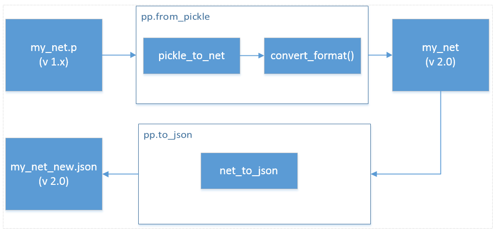

Update to pandapower 2.0¶
Some fundamental changes were made to make pandapower more easy to use and consistent with other tools with the release of pandapower 2.0.
Most of these changes go back to the fact that pandapower was originally developed only for power flow calculations in low and medium voltage networks, but is today also widely used in transmission systems. The most significant changes are:
the power unit was changed from kW to MW
the signing system in gen, sgen and ext_grid was changed to a generator based system
some transformer parameters were renamed for better readability
the definition of constraints and costs was made easier and more intuitive
These changes are not backwards compatible, which is why a major release was necessary. In the following you can find a description for how to update from pandapower 1.x to 2.x.
Of course there are also many new features in addition to these changes, such as an Interface to PowerModels.jl.
How to update saved networks¶
pandapower has a convert_format function that detects if an network that was saved to the hard drive with an older version of pandapower, and automatically corrects the data names and values in the element tables. However, the older the network is and the more changes have been made to the data structure, the more difficult it will be for the convert_format function to apply all necessary changes. Therefore, it is strongly advised to resave all networks when updating pandapower (especially with a major update such as 2.0):
With pandapower 2.0, we also advice to save networks in the .json format. It is much more robust to updates of libraries (for example, a .p file created with pandas < 0.20 can not be loaded with pandas 0.20 due to a change in the internal data structures. This is not an issue when saving the networks as .json files). So resave your pickle files as .json files such as
import pandapower as pp
net = pp.from_pickle("C:\\my_file.p")
pp.runpp(net)
pp.to_json(net, "C:\\my_file_2.0.json")
Transformer parameter naming¶
Two major changes have been made to transformer parameters:
the tap changer variables were renamed for better readability
the naming for short-circuit voltage has been changed from „vsc“ to „vk“, which is consistent with international standards such as IEC 60909
The meaning or value of these parameters has not changed, so that the code can be updated by searching and replacing as follows:
tp_ ——-> tap_
_st_ ——> _step_
_mid —–> _neutral
vsc ——> vk
Here is a full list of affected parameters:
pandapower 1.x |
pandapower 2.x |
elements |
|---|---|---|
tp_side |
tap_side |
trafo, trafo3w |
tp_mid |
tap_neutral |
trafo, trafo3w |
tp_min |
tap_min |
trafo, trafo3w |
tp_max |
tap_max |
trafo, trafo3w |
tp_pos |
tap_pos |
trafo, trafo3w |
tp_st_percent |
tap_step_percent |
trafo, trafo3w |
tp_st_degree |
tap_step_degree |
trafo, trafo3w |
tp_phase_shifter |
tap_phase_shifter |
trafo, trafo3w |
vsc_percent |
vk_percent |
trafo |
vscr_percent |
vkr_percent |
trafo |
vsc_hv_percent |
vk_hv_percent |
trafo3w |
vscr_hv_percent |
vkr_hv_percent |
trafo3w |
vsc_mv_percent |
vk_mv_percent |
trafo3w |
vscr_mv_percent |
vkr_mv_percent |
trafo3w |
vsc_lv_percent |
vk_lv_percent |
trafo3w |
vscr_lv_percent |
vkr_lv_percent |
trafo3w |
MVA-based Units¶
The basic power unit has been changed from kVA to MVA to allow a more comfortable handling of transmission systems. This affects all three types of power units:
active power: kw –> mw
reactive power: kvar –> mvar
apparent power: kva –> mva
All elements have to be defined with MVA-based units, and results are also given in these units. Since the units in pandapower are always hard coded in the column names, the access to the dataframes also has to be adapted:
pandapower 1.x |
pandapower 2.x |
|---|---|
|
|
|
|
|
|
|
|
The single exception is the parameter pfe_kw in net.trafo and net.trafo3w, which remains in kW. This is because the iron losses of transformers are almost always in the kW range.
Generation Based Signing System¶
In pandapower 1.x, the signing system for all elements (including the generator type elements) was from a load point of view. This has the advantage of consistency, but on the other hand leads to confusion and non-intuitive commands when generators are modeled in a load-based system. Therefore, three elements have been changed to a generator based signing system:
net.gen
net.sgen
net.ext_grid
All other elements remain in the load-based signing system. So for these three elements, in addition to the unit being changed from kW to MW, the sign for active and reactive power is also reversed:
pandapower 1.x |
pandapower 2.x |
|---|---|
|
|
|
|
Constraints¶
Constraints are also changed to MVA-based units, and they are also affected by the change in the signing. Because of the change in signing, the minimum and maximum constraints are switched in the tables gen, ext_grid and sgen:
pandapower 1.x |
pandapower 2.x |
|---|---|
|
|
|
|
Cost Functions¶
Constraints are also changed to MVA-based units, and they are also affected by the change in the signing. In addition to that, for polynomial costs, the cost parameters can be directly specified as parameters instead of passing a list of polynomials:
pandapower 1.x |
|
pandapower 2.x |
|
The definition of piecewise linear costs has also changed. In pandapower 1.x, the cost polyonmial is given as list of cost points:
[(p1, c1), (p2, c2), (p3, c3)]
The cost function is then interpolated between those points, and the costs are then defined by the slope of the curve between those points. So for a generator with the cost function:
[(0, 0), (100, 50), (300, 250)]
the costs are 0.5 €/MW in the range between 0 and 100 MW and 1€/MW in the range between 100 MW and 300 MW.
With this definition of the cost function, the actual costs are not intuitively clear from the defined function. In pandapower 2.0, the costs are therefore defined with a range and slope:
[(p1, p2, c1), (p2, p3, c2)]
The same cost function that was defined as above would therefore be defined in pandapower 2.0 as:
[(0, 100, 0.5), (100, 300, 1.)]
which allows direct definition of the costs and ranges.
Of course the signing changes and the MVA-unit changes also apply, so that in summary the different cost function definitions look like this:
pandapower 1.x |
|
pandapower 2.x |
|
Measurements¶
There have been changes in the measurement table of pandapower grids. element is set to the pandapower index of the measured element, bus is not a column anymore. The new column side defines the side of the element at which the measurement is placed. It can be «from» / «to» for lines, «hv» / «mv» / «lv» for trafo/trafo3w elements and is None for bus measurements. Explicitly setting a bus index for side is still possible. type is renamed to measurement_type for additional clarity. Power measurements are set in MW or MVar now, consistent with the other pandapower tables.